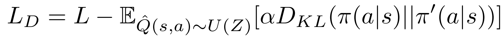
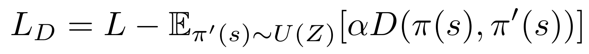
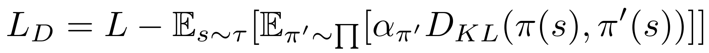

Diversity-Driven Exploration Strategy for Deep Reinforcement Learning
|
National Tsing Hua University, Hsinchu
|
|
Conference on Neural Information Processing Systems (NIPS) 2018
|
Abstract
Efficient exploration remains a challenging research problem in reinforcement learning, especially when an environment contains large state spaces, deceptive local optima, or sparse rewards. To tackle this problem, we present a diversity-driven approach for exploration, which can be easily combined with both off- and on-policy reinforcement learning algorithms. We show that by simply adding a distance measure to the loss function, the proposed methodology significantly enhances an agent"s exploratory behaviors, and thus preventing the policy from being trapped in local optima. We further propose an adaptive scaling method for stabilizing the learning process. We demonstrate the effectiveness of our method in huge 2D gridworlds and a variety of benchmark environments, including Atari 2600 and MuJoCo. Experimental results show that our method outperforms baseline approaches in most tasks in terms of mean scores and exploration efficiency.
Overview
Diversity-driven exploration is an effective way to motivate an agent to examine a richer set of states, as well as provide it with an approach to escape from sub-optimal policies. This can be achieved by modifying the loss function LD as above. L indicates the loss function of any arbitrary DRL algorithms, π is the current policy, π′ is a policy sampled from a limited set of the most recent policies Π′, D is a distance measure between π and π′, and α is a scaling factor for D. First, it drives an agent to proactively attempt new policies, increasing the opportunities to visit novel states even in the absence of reward signals. Second, the distance measure D motivates exploration by modifying an agent"s current policy π, instead of altering its behavior randomly. Third, it allows an agent to perform either greedy or stochastic policies while exploring effectively in the training phase. These three properties allow a DRL agent to explore an environment in a systematic and consistent manner.
Implementation
DQN

DDPG

A2C

Adaptive Scaling
We define αi in one of the above 2 strategies. The proactive strategy incentivizes the current policy π to converge to the high-performing policies in Π′, while keeping away from the poor ones. On the other hand, the reactive strategy only motivates π to stay away from the underperforming policies.
Experimental Result
Citation
@inproceedings{hong2018div-driven,
author = {Zhang-Wei Hong and Tzu-Yun Shann and Shih-Yang Su and Yi-Hsiang Chang and Tsu-Jui Fu and Chun-Yi Lee},
title = {Diversity-Driven Exploration Strategy for Deep Reinforcement Learning},
booktitle = {Conference on Neural Information Processing Systems (NIPS)},
year = {2018}
}
template from pathak22